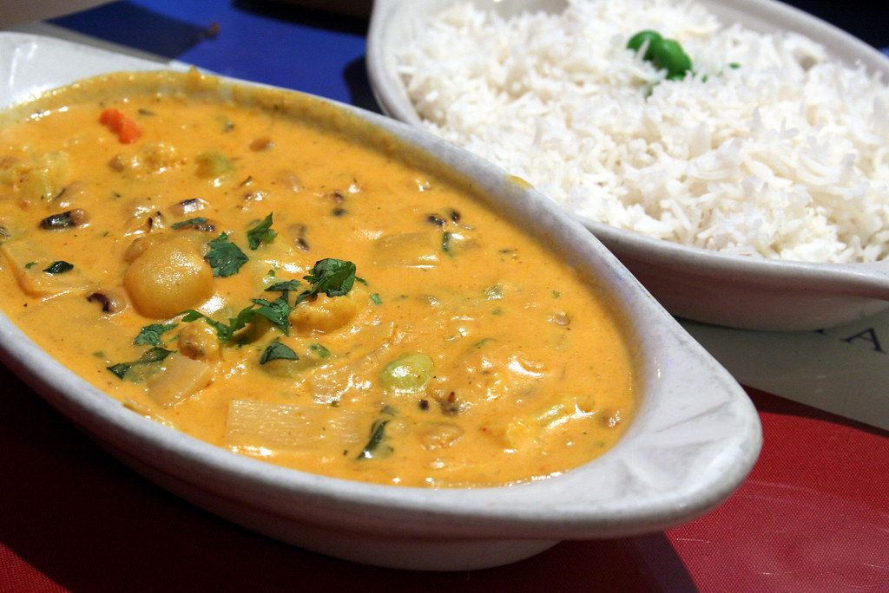
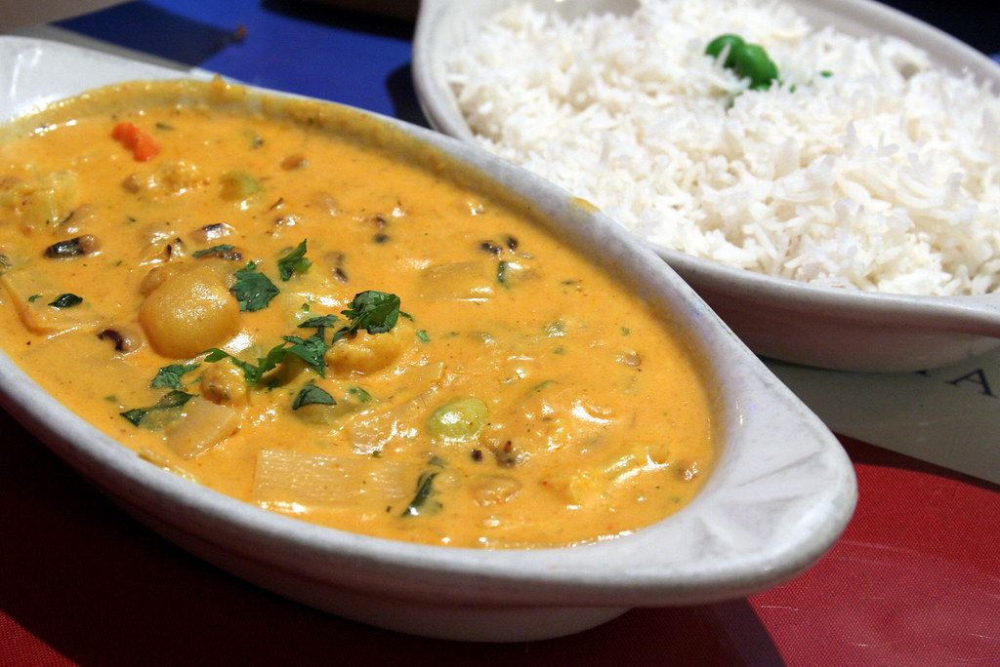

Some of the benefits of plant-based diets include:
Plant based diets allow for faster muscle recovery times because meat and dairy have inflammatory effects.
Plant-based eaters get more antioxidants, which help neutralize free radicals. Free radicals lead to muscle fatigue, reduced athletic performance, and impaired recovery.
Plant-based diets are usually lower in fat and higher in fiber which results in reduced body fat. Reduced body fat means that athletes can more efficiently use oxygen during exercise.
Plant-based diets are better for cardiovascular health.
These benefits are why many of the worlds greatest athletes have switched to plant based diets:
NBA Star Kyrie Irving
GOAT Endurance Runner Scott Jurek
Tennis Champion Venus Williams
Molly Cameron - The only trans athlete to compete in the UCI Cyclo-Cross World Cup.
Colin Kaepernick - NFL
Lewis Hamilton - All Time Greatest Formula One Racers
Sarah Stewart - Silvermedalist Paralympics athlete
Below are pictures taken by me and links to some of my favorite high-protein recipes inspired by vegan chefs that help fuel my runs:
High-Protein chili
Chickpea and Kale Stir Fry
Tofu and Potato Curry

 



Images courtesy of Pexels.com